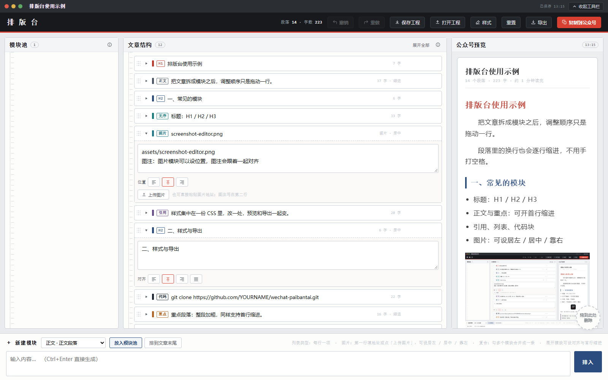

把文章拆成模块之后，调整顺序只是拖动一行。
段落里的换行也会逐行缩进，不用手打空格。

图注：图片模块可以设位置，图注会跟着一起对齐
样式集中在一份 CSS 里，改一处，预览和导出一起变。
git clone https://github.com/YOURNAME/wechat-paibantai.git
# 单文件、零依赖：双击 index.html 就能用重点段落：整段加粗，同样支持首行缩进。
组合会把内部模块放进一个虚线框，导出时保留外框。
结尾：点右上角「复制到公众号」，即可带样式粘贴。